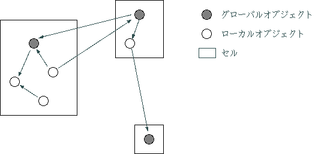

OZ++ では利用者定義型として、クラス型とレコード型の二種類がある。
レコード型は基本型と同様に値として解釈され、後述する代入および比較は値 に対して実行される。また、代入および後述するメソッド呼び出しの引数 または返り値にレコード型が使用された場合には、すべて値がコピーされる (5.12 節参照)。
クラス型には、クラス (5.13 節参照) とスタティッ ククラスがある。スタティッククラス (5.14 節参照) は、以下の点でクラスと異 なる。
クラス型は参照として解釈され、後述する代入および比較は参照に対して実行 されるので、代入はインスタンスの共有を意味する。メソッド呼び出しの引数 または返り値にクラス型が使用された場合には、参照が渡る場合と、インスタ ンスのコピーが実行される場合とがある(後述)
class Container; Container a, b; a=>new(); // インスタンスを生成し、それを a に結びつける b = a; // a の参照を b に代入することによって、a と b は同じインスタンスを共有する
クラスのインスタンスは、グローバルオブジェクトまたはローカルオブジェク トのどちらかの属性を持つ。スタティッククラスのインスタンスはすべてロー カルオブジェクトの属性を持つ。
すべて参照によって分散透過にアクセスされ共有されるため、システ ム内で一意に識別するためのオブジェクトIDが付与される。グローバルオブジェ クト自身のメソッド内では、予約語 oid によって、自身へのグローバ ルオブジェクトとしての参照を得ることができる。
グローバルオブジェクトの部品として機能し、一つのグローバルオブジェクト 内では参照によってアクセスされるが、グローバルオブジェクト間ではコピー が実行される。そのため、オブジェクトIDは付与されず、グローバルオブジェ クトと無関係に存在することはない。
一つのグローバルオブジェクトとそれに属する任意個のローカルオブジェクト から構成されるインスタンスの集合を、セルと呼ぶ。セルはエグゼキュータの メモリ管理の単位である。セル、グローバルオブジェクト、ローカルオブジェ クトの関係を図 5.5--1 に示す。言 語では、予約語 cell によって、セル内の グローバルオブジェクトへの参照を表す。
|  |
また、グローバルオブジェクトとローカルオブジェクトの違いは型として区別 される。つまり、同じクラスのインスタンスであっても、グローバルオブジェ クトをローカルオブジェクトに代入したり、グローバルオブジェクトが指定さ れているメソッドの仮引数にローカルオブジェクトを渡したりすることはできない。
class Container; Container a; // a はローカルオブジェクト global Container b; // b はグローバルオブジェクト a=>new(); b = a; // 型が異なるため、エラー
さらにメソッド呼び出しの引数および返り値にクラス型が使用された場合にグ ローバルオブジェクトとローカルオブジェクトではその扱いが異なる。グロー バルオブジェクトは常に参照として扱われるのに対して、ローカルオブジェク トでは、自分が属しているセル内のインスタンスに対するメソッド呼び出しの 場合には参照として扱われるが、それ以外の場合にはそのローカルオブジェク トのコピーが実行され、そのコピーされたものがやり取りされる。